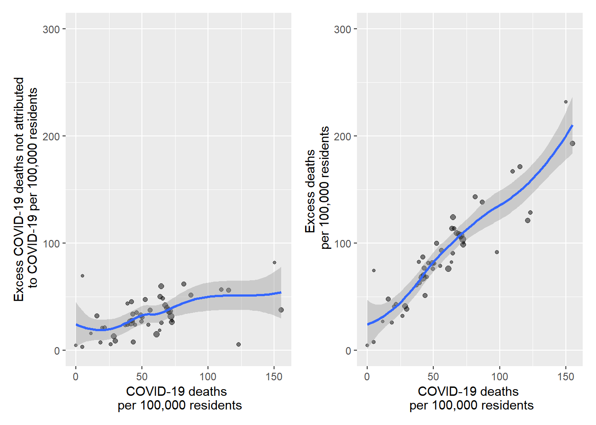
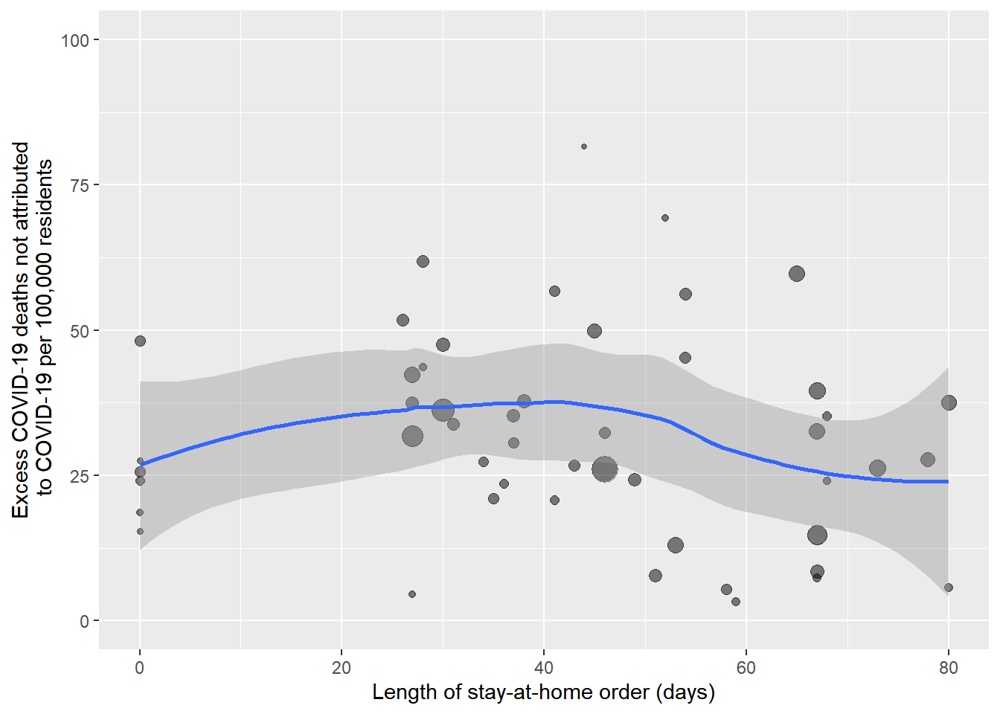

library(tidyverse)## -- Attaching packages --------------------------------------- tidyverse 1.3.0 --## v ggplot2 3.3.2 v purrr 0.3.4
## v tibble 3.0.4 v dplyr 1.0.2
## v tidyr 1.1.2 v stringr 1.4.0
## v readr 1.4.0 v forcats 0.5.0## -- Conflicts ------------------------------------------ tidyverse_conflicts() --
## x dplyr::filter() masks stats::filter()
## x dplyr::lag() masks stats::lag()library(lubridate)##
## Attaching package: 'lubridate'## The following objects are masked from 'package:base':
##
## date, intersect, setdiff, unionlibrary(readr)
library(janitor)##
## Attaching package: 'janitor'## The following objects are masked from 'package:stats':
##
## chisq.test, fisher.testlibrary(patchwork)
library(scales)##
## Attaching package: 'scales'## The following object is masked from 'package:purrr':
##
## discard## The following object is masked from 'package:readr':
##
## col_factorlibrary(moderndive)
library(stats)
library(skimr)
library(kableExtra)##
## Attaching package: 'kableExtra'## The following object is masked from 'package:dplyr':
##
## group_rowsFor this project we are using two datasets available from the CDC.
The first is a dataset that includes weekly estimates of expected deaths by week for each US states, as well as observed deaths. It is available for download here: https://data.cdc.gov/NCHS/Excess-Deaths-Associated-with-COVID-19/xkkf-xrst/
excess_deaths <- read_csv("data/Excess_Deaths_Associated_with_COVID-19.csv") %>%
clean_names() %>%
rename(end_week=week_ending_date) %>%
filter(type=="Predicted (weighted)"&outcome=="All causes") The second dataset includes the weekly counts of COVID-19 related deaths in each US state. And is available here: https://data.cdc.gov/NCHS/Provisional-COVID-19-Death-Counts-by-Week-Ending-D/r8kw-7aab
covid_deaths <- read_csv("data/Provisional_COVID-19_Death_Counts_by_Week_Ending_Date_and_State.csv") %>%
clean_names() %>%
mutate(end_week=mdy(end_week))%>%
select(end_week,state,covid_19_deaths,total_deaths,percent_of_expected_deaths,pneumonia_deaths, pneumonia_and_covid_19_deaths, influenza_deaths, pneumonia_influenza_or_covid_19_deaths)
merged_data <- inner_join(covid_deaths,excess_deaths) %>%
mutate(excess_non_covid=excess_higher_estimate-covid_19_deaths)These datasets are updated frequently. This analysis is based on data downloaded on December 1, 2020. Also because death reporting takes time this analysis focuses on deaths reported through the end of October 2020.
To explore the relationship between excess deaths, deaths attributed to COVID-19, and excess deaths that were not attributed to COVID-19, we generated time series plots for these quantities for the entire nation.
panel1=merged_data %>%
filter(state=="United States") %>%
ggplot(aes(x=end_week,y=covid_19_deaths))+
labs(x = "Date", y = "COVID-19 deaths") +
geom_point(alpha=0.5, size=3)+
geom_smooth(se=FALSE, span=0.2) +
scale_x_date(
labels = date_format("%m-%Y"),
breaks= c(as.Date("2020/2/1"),as.Date("2020/5/1"),as.Date("2020/8/1"), as.Date("2020/11/1")),
limits= c(as.Date("2020/2/1"), as.Date("2020/10/31")))+
theme(axis.text.x=element_text(angle=45,hjust=1))+
scale_y_continuous(limits=c(-1000, 25000))
panel2= merged_data %>%
filter(state=="United States") %>%
ggplot(aes(x=end_week,y=excess_higher_estimate))+
labs(x = "Date", y = "Excess deaths") +
geom_point(alpha=0.5, size=3)+
geom_smooth(se=FALSE, span=0.2) +
scale_x_date(
labels = date_format("%m-%Y"),
breaks= c(as.Date("2020/2/1"),as.Date("2020/5/1"),as.Date("2020/8/1"), as.Date("2020/11/1")),
limits= c(as.Date("2020/2/1"), as.Date("2020/10/31")))+
theme(axis.text.x=element_text(angle=45,hjust=1))+
scale_y_continuous(limits=c(-1000, 25000))
panel3=
merged_data %>%
filter(state=="United States") %>%
ggplot(aes(x=end_week,y=excess_non_covid))+
labs(x = "Date", y = "Excess deaths not attributed to COVID-19") +
geom_point(alpha=0.5, size=3)+
geom_smooth(se=FALSE, span=0.2) +
scale_x_date(
labels = date_format("%m-%Y"),
breaks= c(as.Date("2020/2/1"),as.Date("2020/5/1"),as.Date("2020/8/1"), as.Date("2020/11/1")),
limits= c(as.Date("2020/2/1"), as.Date("2020/10/31")))+
theme(axis.text.x=element_text(angle=45,hjust=1))+
scale_y_continuous(limits=c(-1000, 25000))
panel2 + panel1 + panel3This code chunk calculates the number of excess deaths, covid deaths, and excess non-covid deaths in the United States from February through October 2020.
merged_data %>%
filter(state=="United States" & end_week < as.Date("2020-11-1")) %>%
summarise(
excess_deaths=sum(excess_higher_estimate),
covid_deaths=sum(covid_19_deaths),
excess_not_covid=sum(excess_higher_estimate)-sum(covid_19_deaths)) %>%
kbl(caption="Excess and Covid Deaths in the United States: Feb-October, 2020", digits = 1) %>% kable_classic()| excess_deaths | covid_deaths | excess_not_covid |
|---|---|---|
| 322742 | 228524 | 94218 |
Approximately 1/3 of excess deaths were not attributed to COVID.
Next I was interested in getting a sense of whether the rate of excess non-COVID-19 deaths varied across States.
In the next code chunk I aggregate the data by state over the entire period, merge the data with another data set containing state level population estimates for 2020. I then calculate rates of COVID-19 deaths, excess deaths, and excess deaths not attributable to COVID-19 (per 100,000 residents) for each state, and calculate the median and intraquartile range for these quatities.
states= merged_data %>%
group_by(state) %>%
filter(end_week < as.Date("2020-11-1") & state !="United States" & state!="New York City") %>%
filter(!is.na(covid_19_deaths)) %>%
filter(!is.na(excess_higher_estimate)) %>%
summarise(
excess_deaths=sum(excess_higher_estimate),
covid_deaths=sum(covid_19_deaths),
excess_not_covid=sum(excess_higher_estimate)-sum(covid_19_deaths)) ## `summarise()` ungrouping output (override with `.groups` argument)state_pop <- read_csv("data/State_Populations.csv") %>%
clean_names()##
## -- Column specification --------------------------------------------------------
## cols(
## State = col_character(),
## Population = col_double()
## )states=right_join(states,state_pop) %>%
mutate(excess_death_r=excess_deaths/population*100000) %>%
mutate(covid_death_r=covid_deaths/population*100000) %>%
mutate(excess_not_covid_r=excess_not_covid/population*100000)## Joining, by = "state"states %>%
select(excess_death_r, covid_death_r, excess_not_covid_r) %>%
rename(excess_death_rate=excess_death_r,covid_death_rate=covid_death_r,excess_deaths_not_from_covid_rate=excess_not_covid_r) %>%
skim_without_charts() %>%
select(skim_variable, numeric.p50, numeric.p25, numeric.p75) %>%
rename(Rate=skim_variable, Median=numeric.p50, p25=numeric.p25, p75th=numeric.p75) %>%
kbl(caption="Rates of excess and COVID-19 deaths (per 100,000 residents) among US States and District of Columbia: Feb-October, 2020", digits = 1) %>%
kable_classic() | Rate | Median | p25 | p75th |
|---|---|---|---|
| excess_death_rate | 82.1 | 65.5 | 108.0 |
| covid_death_rate | 52.3 | 39.0 | 70.5 |
| excess_deaths_not_from_covid_rate | 27.7 | 19.7 | 40.9 |
This state-level dataset is used to visually explore the relationships between state-level COVID-19 death rates, excess mortality rates, and rates of excess non-COVID-19 mortality per 100,000 residents.
panel4 = states %>%
ggplot( aes(x=covid_death_r,y=excess_not_covid_r, size=population))+
labs(x = "COVID-19 deaths \n per 100,000 residents", y = "Excess COVID-19 deaths not attributed\n to COVID-19 per 100,000 residents") +
geom_point(alpha=0.5)+
geom_smooth(weight="population")+
theme(legend.position = "none") +
scale_y_continuous(limits=c(0, 300))
panel5 = states %>%
ggplot( aes(x=covid_death_r,y=excess_death_r, size=population))+
labs(x = "COVID-19 deaths \n per 100,000 residents", y = "Excess deaths \n per 100,000 residents") +
geom_point(alpha=0.5)+
geom_smooth(, weight="population")+
theme(legend.position = "none") +
scale_y_continuous(limits=c(0, 300))
panel4 + panel5## `geom_smooth()` using method = 'loess' and formula 'y ~ x'## Warning: Removed 3 rows containing non-finite values (stat_smooth).## Warning: Removed 3 rows containing missing values (geom_point).## `geom_smooth()` using method = 'loess' and formula 'y ~ x'## Warning: Removed 1 rows containing non-finite values (stat_smooth).## Warning: Removed 1 rows containing missing values (geom_point).
We explore whether the duration of stay at home orders are associated with excess non-covid related mortality. We import and link data on the lengths of each states stay-at-home-orders based on information aggregated from by the National Academy of State Health Policy (https://www.nashp.org/governors-prioritize-health-for-all/). We join these data to our state level data set plot stay-at-home order duratoin vs non-covid-19 excess mortality rates.
stay_at_home_orders <- read_csv("data/stay_at_home_orders_final.csv",
col_types = cols(Start = col_date(format = "%m/%d/%Y"),
End = col_date(format = "%m/%d/%Y"))) %>%
clean_names() %>%
mutate(stay_at_home=if_else(length==0,FALSE,TRUE))
states=right_join(states,stay_at_home_orders)## Joining, by = "state"states %>%
ggplot( aes(x=length,y=excess_not_covid_r, size=population))+
labs(x = "Length of stay-at-home order (days)", y = "Excess COVID-19 deaths not attributed\n to COVID-19 per 100,000 residents") +
geom_point(alpha=0.5)+
geom_smooth(, weight="population")+
theme(legend.position = "none") +
scale_y_continuous(limits=c(0, 100))## `geom_smooth()` using method = 'loess' and formula 'y ~ x'## Warning: Removed 2 rows containing non-finite values (stat_smooth).## Warning: Removed 2 rows containing missing values (geom_point).
Finally we fit some regression models to evaluate several hypothesis.
First we evaluate the hypothesis (which is pretty obvious) that state excess mortality rate during the COVID epidemic is associated with COVID-19 mortality. We fit a bivariable linear regression model, with cluster robust standard errors.
library(miceadds)## Loading required package: mice##
## Attaching package: 'mice'## The following object is masked from 'package:stats':
##
## filter## The following objects are masked from 'package:base':
##
## cbind, rbind## * miceadds 3.10-28 (2020-07-29 21:56:24)mod1 <- lm.cluster(excess_death_r ~ covid_death_r, data = states, cluster="state")## Loading required namespace: sandwichsummary(mod1) ## R^2= 0.84055
##
## Estimate Std. Error t value Pr(>|t|)
## (Intercept) 20.490304 5.8769983 3.486525 4.893389e-04
## covid_death_r 1.174205 0.1071758 10.955872 6.227541e-28confint(mod1) ## 2.5 % 97.5 %
## (Intercept) 8.9715989 32.009009
## covid_death_r 0.9641438 1.384265Accounting for state-level clustering, we found a statistically significant association between the COVID-19 death rate and the excess mortality rate among US states (p<0.001). Each additional death per 100,000 residents was associated was 1.2 excess deaths per 100,000 individuals (95% CI 0.9 to 1.4). We observed that 84% in the variability in excess mortality among states was explained by the COVID-19 death rate.
Next we evaluated the less obvious hypothesis that the rate of excess death not attributable to COVID-19 was associated with the COVID-19 death rate. We fit a similar model:
mod2 <- lm.cluster(excess_not_covid_r ~ covid_death_r, data = states, cluster="state")
summary(mod2) ## R^2= 0.10396
##
## Estimate Std. Error t value Pr(>|t|)
## (Intercept) 20.4903038 5.8769983 3.486525 0.0004893389
## covid_death_r 0.1742046 0.1071758 1.625409 0.1040753359confint(mod2) ## 2.5 % 97.5 %
## (Intercept) 8.97159886 32.0090088
## covid_death_r -0.03585615 0.3842653There was no statistically significant association between the rate of excess deaths not attributed to COVID-19 and the rate of COVID-19 mortality (p=0.10).
Finally we fit a linear model (which accounts for clustering at the state level), to tests the hypothesis that the duration of a states lock down is associated with excess mortality to attributed to COVID=19.
library(miceadds)
mod3 <- lm.cluster(excess_not_covid_r ~ length, data = states, cluster="state")
summary(mod3)## R^2= 0.01246
##
## Estimate Std. Error t value Pr(>|t|)
## (Intercept) 34.5792313 4.4984495 7.6869223 1.507166e-14
## length -0.0946756 0.0965685 -0.9803984 3.268895e-01confint(mod3) ## 2.5 % 97.5 %
## (Intercept) 25.7624324 43.39603024
## length -0.2839464 0.09459518Modeling lockdown duration as a continuous variable with a linear relationship with excess mortality, We found no statistically significant relationship between length of lock down and excess deaths not attributed to COVID-19 (p=0.33)
We fit another model modeling lock downs as a present/absent variable
mod4 <- lm.cluster(excess_not_covid_r ~ stay_at_home, data = states, cluster="state")
summary(mod4)## R^2= 0.00607
##
## Estimate Std. Error t value Pr(>|t|)
## (Intercept) 26.589738 4.370597 6.0837768 1.173840e-09
## stay_at_homeTRUE 4.474564 5.261647 0.8504113 3.950964e-01confint(mod4) ## 2.5 % 97.5 %
## (Intercept) 18.023525 35.15595
## stay_at_homeTRUE -5.838074 14.78720Again, while states with lockdowns had a rates of excess deaths that were not attributed to COVID-19 that were higher by 4.5 per 100,000 residents (95% CI -5.8 to 14.8), this association was not statistically significant (p=0.40).
Matthew Angulo (ma3997), Chong Li (cl4045), Alexander Melamed (am5195), Diana Sanchez (des2190)
Data Science Fall 2020